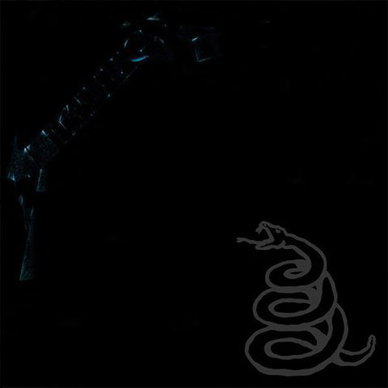

Metallica
1991
A Metallica 1991-ben adta ki a mára legendássá vált „Black Album”-ot, amely nemcsak a zenekar, hanem a teljes rock- és metalvilág egyik legfontosabb mérföldköve lett. A korábbi gyors és komplex thrash metal dalok után a zenekar tudatosan lassabb, súlyosabb és sokkal dallamosabb számokat írt, ezzel új közönséget is meghódítva. A fekete borítójú, hivatalosan cím nélküli lemezen olyan dalok kaptak helyet, mint az „Enter Sandman”, a „Sad But True”, a „The Unforgiven” és a „Nothing Else Matters”, amelyek közül több mára a rockrádiók állandó slágerévé vált.
A felvételek Bob Rock producer irányításával zajlottak, aki teljesen új munkamódszereket vezetett be. Ez sok feszültséget szült a stúdióban, hiszen a zenekar tagjai – James Hetfield énekes-gitáros, Lars Ulrich dobos, Kirk Hammett szólógitáros és Jason Newsted basszusgitáros – hozzászoktak a gyors, ösztönös munkához. Rock viszont minden apró részletet tökéletesíteni akart, ami időnként vitákhoz vezetett, de a végeredmény igazolta a szigorát.
A „Black Album” azonnali sikert aratott: a toplisták élére került több országban, és mára több mint 30 millió példányban kelt el világszerte, ezzel a Metallica legkelendőbb albuma lett. A kiadást egy monumentális világturné követte, amely éveken át tartott, és a zenekart végleg a világ legnagyobb rockbandái közé emelte. A lemez nemcsak a Metallica pályafutásának csúcspontja, hanem a ’90-es évek egyik legmeghatározóbb rockprodukciója is, amely a mai napig óriási hatással van a műfajra és a közönségre egyaránt.
| Szám | Hossz | Írók |
|---|---|---|
| Enter Sandman | 5:29 | Hetfield, Ulrich, Hammett |
| Sad But True | 5:24 | Hetfield, Ulrich |
| Holier Than Thou | 3:47 | Hetfield, Ulrich |
| The Unforgiven | Hetfield, Ulrich, Hammett | |
| Wherever I May Roam | Hetfield, Ulrich | |
| Don't Tread on Me | Hetfield, Ulrich | |
| Through the Never | Hetfield, Ulrich, Hammett | |
| Nothing Else Maters | Hetfield, Ulrich | |
| Of Wolf and Man | Hetfield, Ulrich, Hammett | |
| The God That Failed | Hetfield, Ulrich | |
| My Friend of Misery | Hetfield, Ulrich, Newsted | |
| The Struggle Within | Hetfield, Ulrich |